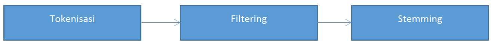

Text Processing
Tokenisasi(n-gram)
Tokenisasi adalah proses untuk membagi teks yang dapat berupa kalimat, paragraf atau dokumen, menjadi token-token. Sebagai contoh, tokenisasi dari kalimat " Pelajar Indonesia di China Ditemukan Tewas. " menghasilkan enam token, yakni: " Pelajar ", " Indonesia ", " di ", " China ", " Ditemukan ", " Tewas ". Biasanya, yang menjadi acuan pemisah antar token adalah spasi dan tanda baca. Tokenisasi berguna untuk analisis teks lebih lanjut dan dipakai dalam ilmu linguistik.
Filtering
Tahap Filtering adalah tahap mengambil kata-kata penting dari hasil token. Bisa menggunakan algoritma stoplist (membuang kata kurang penting) atau wordlist (menyimpan kata penting). Stoplist/stopword adalah kata-kata yang tidak deskriptif yang dapat dibuang dalam pendekatan bag-of-words. Contoh stopwords adalah “yang”, “dan”, “di”, “dari” dan seterusnya
Stamming
Stemming adalah proses pemetaan dan penguraian bentuk dari suatu kata menjadi bentuk kata dasarnya. Gampangnya, proses mengubah kata berimbuhan menjadi kata dasar Stemming (atau mungkin lebih tepatnya lemmatization?) adalah proses mengubah kata berimbuhan menjadi kata dasar. Aturan-aturan bahasa diterapkan untuk menanggalkan imbuhan-imbuhan itu.
Stemming (atau mungkin lebih tepatnya lemmatization?) adalah proses mengubah kata berimbuhan menjadi kata dasar. Aturan-aturan bahasa diterapkan untuk menanggalkan imbuhan-imbuhan itu.
Contohnya:
- membetulkan -> betul
- berpegangan -> pegang
Ada banyak persoalan yang dihadapi pada proses stemming Bahasa Indonesia, di antaranya yaitu:
| Imbuhan pada Bahasa Indonesia cukup kompleks, terdiri dari: |
|---|
| Prefiks, imbuhan di depan kata: ber-tiga |
| Suffiks, imbuhan di akhir kata: makan-an |
| Konfiks, imbuhan di depan dan di akhir kata: per-ubah-an |
| Infiks, imbuhan di tengah kata: kemilau. |
| Imbuhan dari bahasa asing: final-isasi, sosial-isasi |
| Aturan perubahan prefiks, seperti (me-) menjadi (meng-, mem-, men-, meny-) |
| Word-Sense Ambiguity (Ambiguitas Rasa Kata), yaitu satu kata dapat memiliki dua makna (seperti misalnya homonim), dan berasal dari kata dasar yang berbeda. Contohnya: |
|---|
| Berikan -> Ber-ikan |
| Berikan -> Beri-kan |
- Overstemming Kata berikan berdasarkan aturan pemenggalan, dapat dipenggal menjadi Ber-i-kan. Menjadi kata dasar i. Untuk mencegah overstemming, algoritma membutuhkan daftar kata dasar. Jika kata yang dipenggal ada di kata dasar, hentikan proses pemenggalan.
- Understemming Mengecek -> menjadi meng-ecek, seharusnya menge-cek. Hal ini dapat disebabkan karena pada kamus kata dasar, ecek juga merupakan kata dasar.
- Ketergantungan terhadap kamus / daftar kata dasar Untuk mencegah overstemming, algoritma menjadi tergantung pada kata dasar. Adanya kekurangan atau kelebihan pada kata dasar dapat menyebabkan overstemming atau understemming.
# tentukan lokasi file, nama file, dan inisialisasi csv
f = open('datakufull.csv', 'r')
reader = csv.reader(f)
deskripsi=[]; #full deskripsi
judul=[]; #fulljudul
# membaca baris per baris
jumlah=0
for row in reader:
jumlah+=1;
if jumlah!=1:
judul.append(str(row[1]))
deskripsi.append(str(row[2]))
des_katadasar=[]
for i in deskripsi:
hasil = ''
kata_per_artikel={}
for j in i.split():
if j.isalpha():
stop = stopword.remove(j)
stem = stemmer.stem(stop)
hasil += stem+ ' '
des_katadasar.append(hasil)
Kode diatas adalah untuk memisahkan kata dasar ,saya ambil per artikel lalu saya gunakan library sastrawi untuk mendapatkan kata dasar. Untuk alur dari program/penjelasan diatas adalah:

Setelah kita melewati proses text processing selanjutnya kita akan membuat Vector Space Model (VSM).